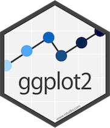

Now i am startign to replicate daniel hadely code found here
here we go
let' first load the required libraries
library(ggplot2)
library(magick)
library(magrittr)Let's make the ggplot first
ggplot(mpg, aes(displ, hwy, colour = class)) +
geom_point() +
ggtitle("Cars") +
ggsave(filename=paste0("./FIGURES/",last_plot()$labels$title,".png"),
width=5, height=4, dpi=300
)plot of chunk ggp
Now time to read the saved image
plot <- image_read("./FIGURES/Cars.png")Now let's bring in a logo
logo_raw <- image_read("http://hexb.in/hexagons/ggplot2.png")
image_write(logo_raw,"./FIGURES/logo.png")now i will show different transformation, it could have been done in one go by piping but went ahead and did it break down for better understanding
first up scaling
logo_raw <- image_read("./FIGURES/logo.png")
logo_raw %>%
image_scale("100") %>%
image_write("./FIGURES/logo_scle.png")Original figure was 
after rescaling, we end up with
scaled
basically the above will rescale the image into width of 100px and height will change accordingly
now changing the background
logo_raw %>%
image_background("grey", flatten=TRUE) %>%
image_display() format width height colorspace filesize
1 PNG 181 210 sRGB 0now time to add some border
logo_raw %>%
image_border("grey", "50x20") %>%
image_display() format width height colorspace filesize
1 PNG 281 250 sRGB 0the above is pretty obvious, grey back ground with 50px left and right, 20px top and bottom, now let try different border for different sides
logo_raw %>%
image_border("grey", "20x10x30x10") %>%
image_display() format width height colorspace filesize
1 PNG 221 230 sRGB 0ah great it just works, awesome
now time to add some text
logo_raw %>%
image_border("grey","50x30") %>%
image_background("grey", flatten=TRUE) %>%
image_annotate("R magick",size=30, color="red") %>%
image_display() format width height colorspace filesize
1 PNG 281 270 sRGB 0let's check out position of the text, by default it starts from top left. Let's say we want to put it in the bottom left. there is the option called "gravity".
logo_raw %>%
image_border("grey","50x30") %>%
image_background("grey", flatten=TRUE) %>%
image_annotate("R magick",
size=30,
color="red",
gravity="southwest") %>%
image_display() format width height colorspace filesize
1 PNG 281 270 sRGB 0apart from "gravity" there is another option called location, which we are going to try next
logo_raw %>%
image_border("grey","50x30") %>%
image_background("grey", flatten=TRUE) %>%
image_annotate("R magick",
size=30,
color="red",
degrees=60,
location="+100+150") %>%
image_display() format width height colorspace filesize
1 PNG 281 270 sRGB 0first look at the option of location. it is the x-axis and y-axis coordinates from the topleft. so y-axis positive value actually goes down. it may change with the gravity option.
degree option changes angle, postive and negative both values will work.
Next up we will see how to combine the logo with the main plot, animation and then incorporate gif in a plot.